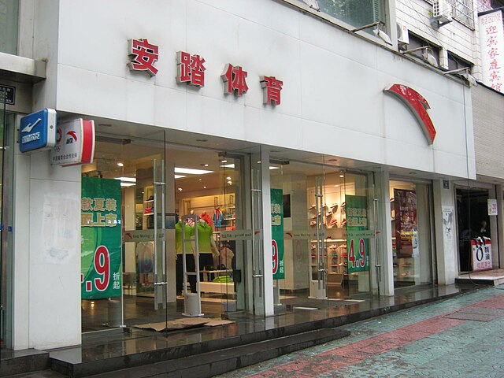
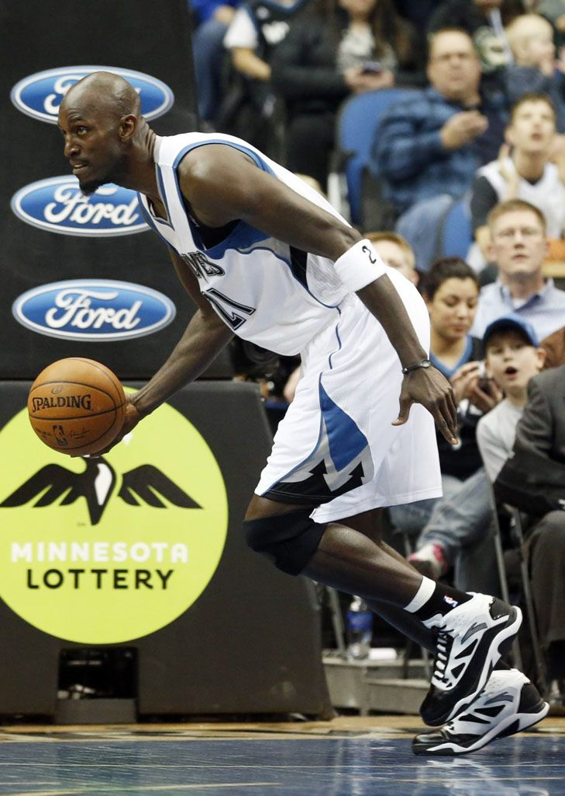
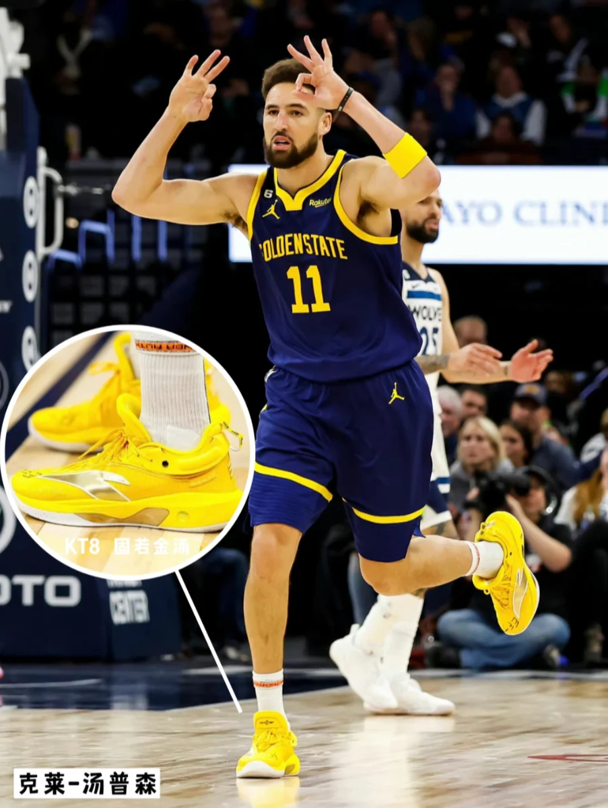
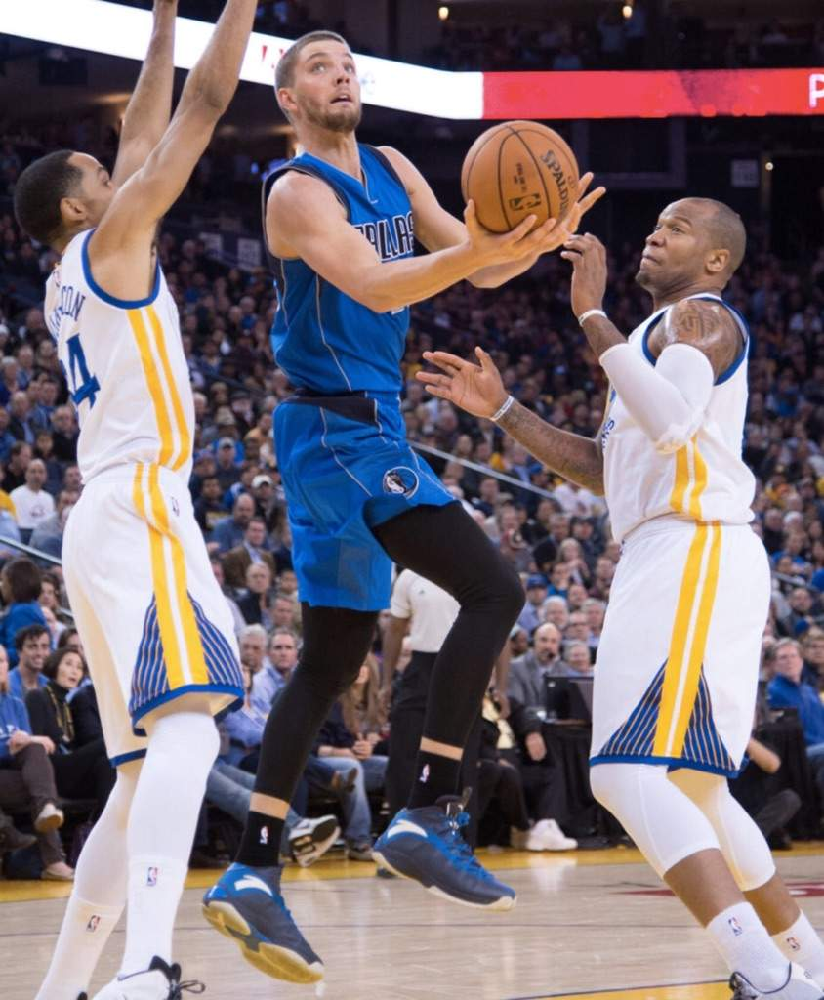

Історія бренду ANTA
У 1987 році підліток Дін Шичжун сів на потяг із південного китайського міста Фучжоу до Пекіна, везучи шкіряне взуття, виготовлене на фабриці його родини в прибережній провінції Фуцзянь.
17-річний хлопець зумів виторгувати вироблене ними взуття в столичних універмагах. Це стало початком еволюції його компанії Anta від маловідомого провінційного шевця до минулого року, який обігнав Adidas і став другим за величиною роздрібним продавцем спортивного одягу в Китаї після Nike з річним доходом у 7,8 мільярдів доларів.
«Дін рано зрозумів, що гроші залежать від бренду, а не від виробництва продукту», — сказала одна особа, близька до керівництва Anta.

1991 рік - Створення компанії Anta.
1999 рік - На фабриці компанії був прийнятий міжнародний стандарт якості ISO 9000 з видачою відповідного сертифіката.
2000 рік - Бренд став офіційним спонсором XXVII Літніх Олімпійських ігор у Сіднеї з таких видів спорту, як: скейтборд, велосипед та ін.
2001 рік - в Пекіні відкрито перший фірмовий магазин. Фірма є спонсором 4-ох регіональних команд Всекитайської спортивної Олімпіади.

2001-2003 рік продукція під торговою маркою ANTA на внутрішньому ринку займає 1-е місце серед китайських виробників, і є безумовним лідером продажів за даними Китайської торгової палати.
Початок продажу одягу. Перший контракт з гравцем НБА.
Набув чинності Контракт з Луїсом Скола, гравцем команди НБА "Houston Rockets".

2008 рік ANTA отримала "Сертифікат якості" від IRMagazine.
2008 рік 15 травня відкрився 5000-й в світі магазин ANTА.
2008 рік Бренд виступив офіційним спонсором національної збірної на Літніх Олімпійських іграх 2008 в Пекіні.
2008 рік Олімпійські ігри в Пекіні дали ANTА можливість розширити колекцію свого взуття та розвитк бізнесу.
2009 рік ANTА придбала італійський спортивний одяг Fila в Китаї.
2009 рік Anta має 600 роздрібних магазинів Fila в Китаї і 7000 магазинів Anta.
2009 рік Anta Sports була зареєстрована на Гонконгській фондовій біржі в 2007 році з ціною IPO в розмірі 5,28 гонконгських доларів за акцію, а Леслі Лі Олександр, власник Houston Rockets, виступала в якості її інвестора.
2010 рік Компанія придбала торгову марку Fila в континентальному Китаї, Гонконгу і Макао з Belle International. З тих пір компанія управляє бізнесом Fila в цих трьох регіонах.
2010 рік ANTA – офіційний спонсор та постачальник екіпіровки, надав всебічну підтримку китайській спортивній делегації на Зимових Олімпійських іграх у Ванкувері.
2010 рік Тенісистка Олена Янкович, яку спонсорує ANTA, виграє BNP ParibasOpen.
2012 рік Зірка NBA, Кевін Гарнетт розриває контракт з Adidas, та підписує контракт з ANTA.
2012 рік Китайські спортсмени на Олімпійських Іграх в Лондоні одягнуті в екіпіровку ANTA.

2015 рік Захисник «Ворріорс» Клей Томпсон підписав контракт з китайським виробником спортивних товарів ANTA. До цього Томпсон грав в кросівках Nike.

2018 рік Китайський Anta купує фінську Amer Sports за $ 5,3 мільярда.
2018 рік Anta Sports, яка продає спортивний одяг під брендами Fila і Descente, а також під своїм власним брендом Anta в Китаї, давно прагнула придбати цього фінського виробника, оскільки воліла розширити свою присутність за кордоном.
2018 рік Протягом багатьох років Анта займалася головним чином проектуванням, розробкою, виробництвом і маркетингом серії спортивного одягу, щоб забезпечити професійні спортивні товари на масовому ринку.
2018 рік В останні роки Анта почали рухатися в повній мірі завдяки стратегії "Single-focus, Multi-brand, and Omni-channel", щоб стати кращими на ринку спортивного одягу.
2018 рік ANTA SPORTS обрана офіційним екіпірувальним партнером Зимових Олімпійських ігор 2022 року в Бейджина.
2018 рік Anta Sports є офіційним постачальником і спонсором численних команд, гравців і асоціацій, таких як Клай Томпсон, Раджон Рондо, Чандлер Парсонс, Кевін Гарнетт і Менні Паккьяо.
Анта була офіційним спонсром одягу для збірної Китаю на Олімпіаді в Ріо.
